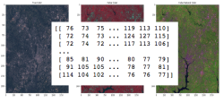
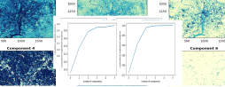
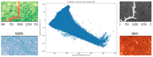
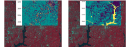
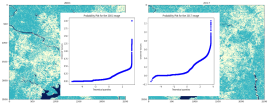
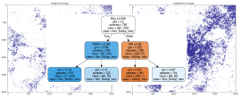

Geospatial Analysis in Python

Part I:
Exploratory Data Analysis For Satellite Images

Part II:
Image Enhancement and Component Analysis

Part III:
Spectral Indices and Transformation

Part IV:
Supervised and Unsupervised Classification

Part V:
Post Image Classification Change Detection

Part VI:
Surface Extraction with Decision Trees